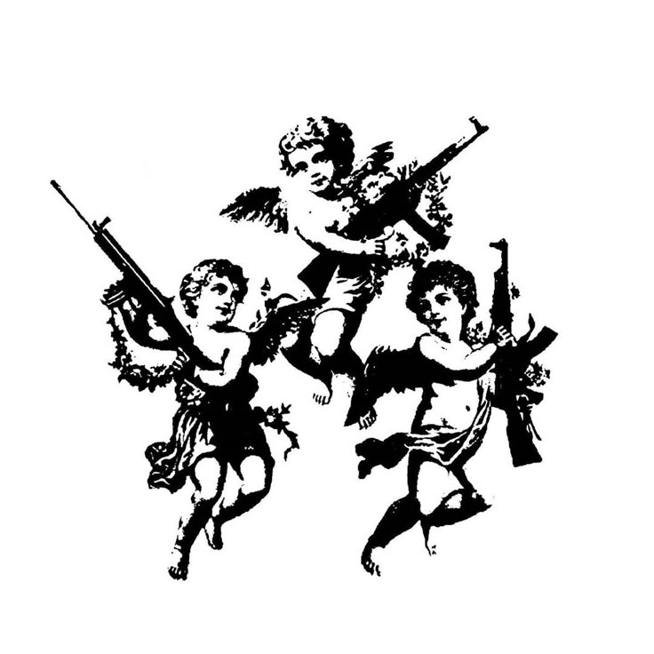
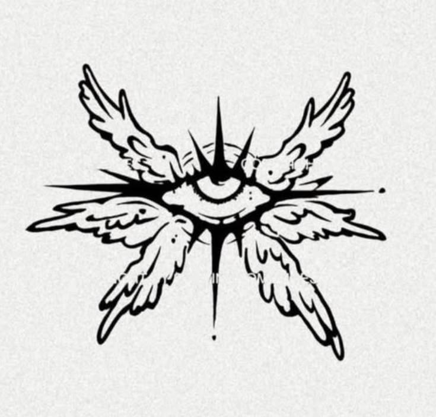
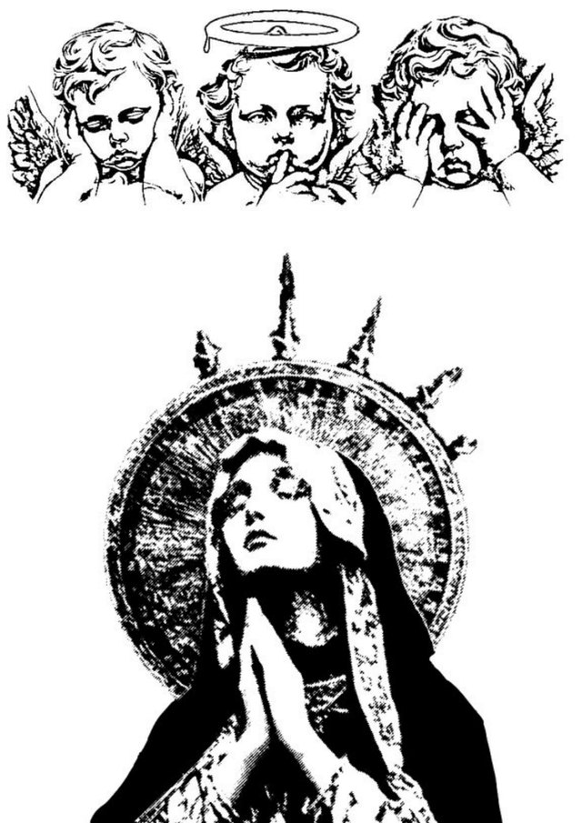
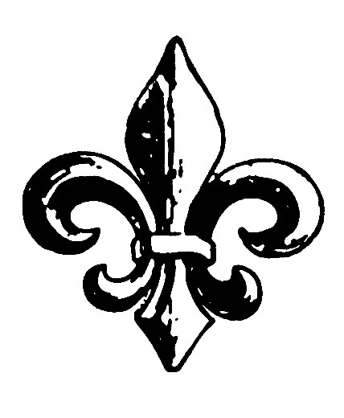
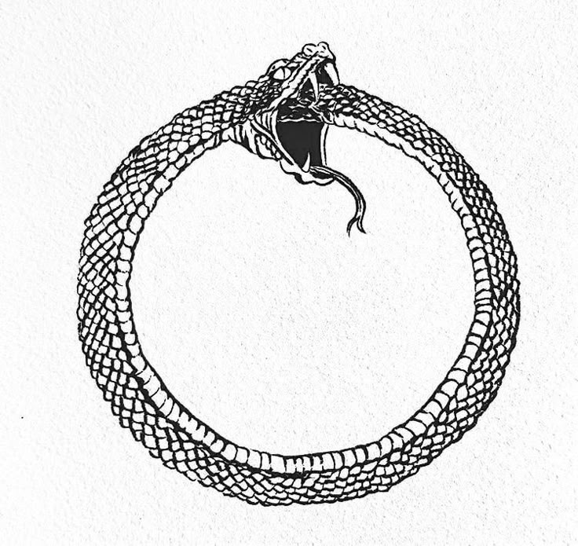

EST. SOMEWHERE ON THE INTERNET✦
Oh. You found me.
Christian
Wolff.™
All that Glitters is not Gold,
but damn it’s beautiful.
GAMER. OCCASIONAL MENACE. HUMAN-ISH.
FIG. 01 — THE USUAL SUSPECT
WOLFF ENTERTAINMENT SYSTEM
NO THOUGHTS. JUST VIBES.CW / TRANSMISSION 001+
▰ ▰ ▰ ▰ ▰
DOIN SUM
EVIL RN ↗
EVIL RN ↗
✳ PLEASE DO NOT FEED THE SKULL.
PERSONAL COLLECTION / 006
Curated chaos.
SIGNAL WAITING





A FEW THINGS STUCK IN MY HEAD. NOW STUCK ON THIS WALL.
CHOOSE YOUR PORTAL03 DESTINATIONS / ZERO OBLIGATIONS
THE SOUNDTRACK TO THIS TABYour entrance soundtrack15 tracks · random selection